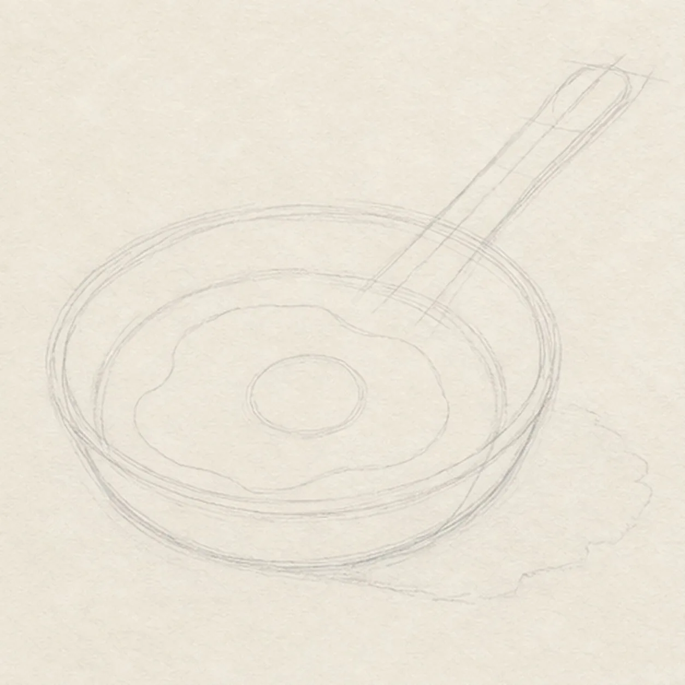
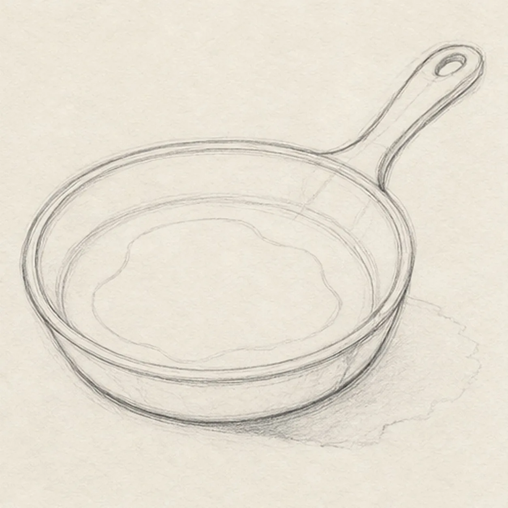
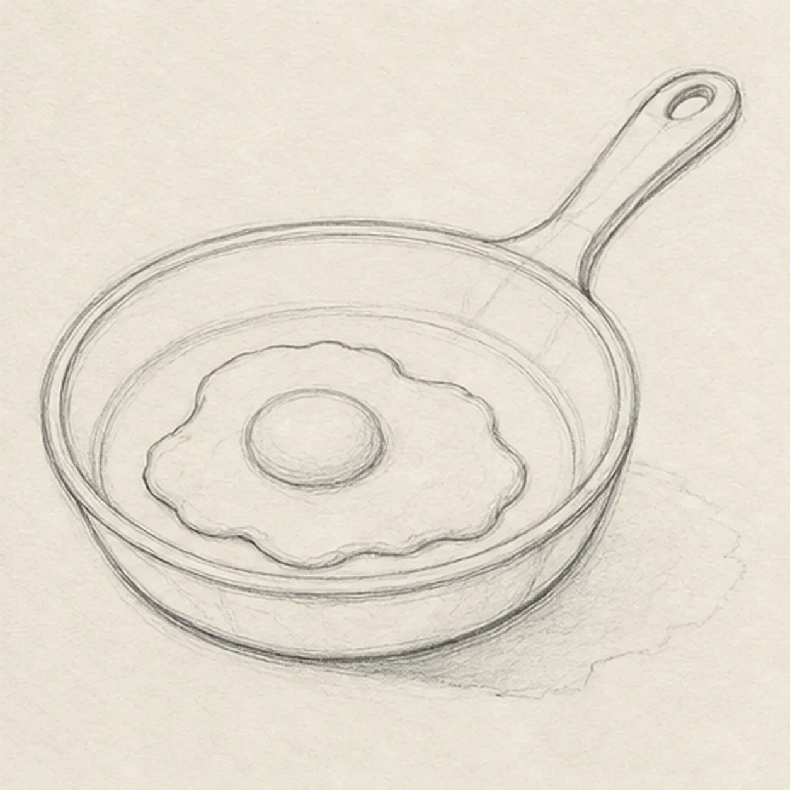
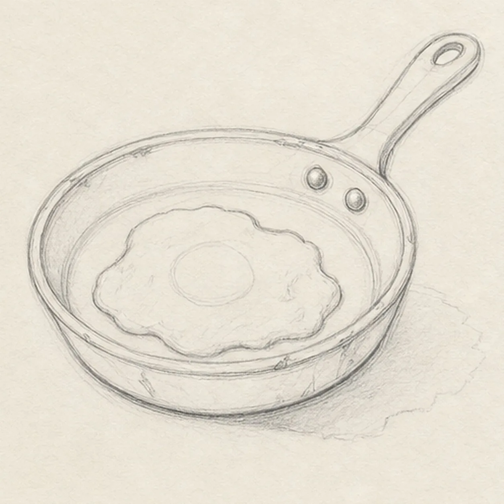
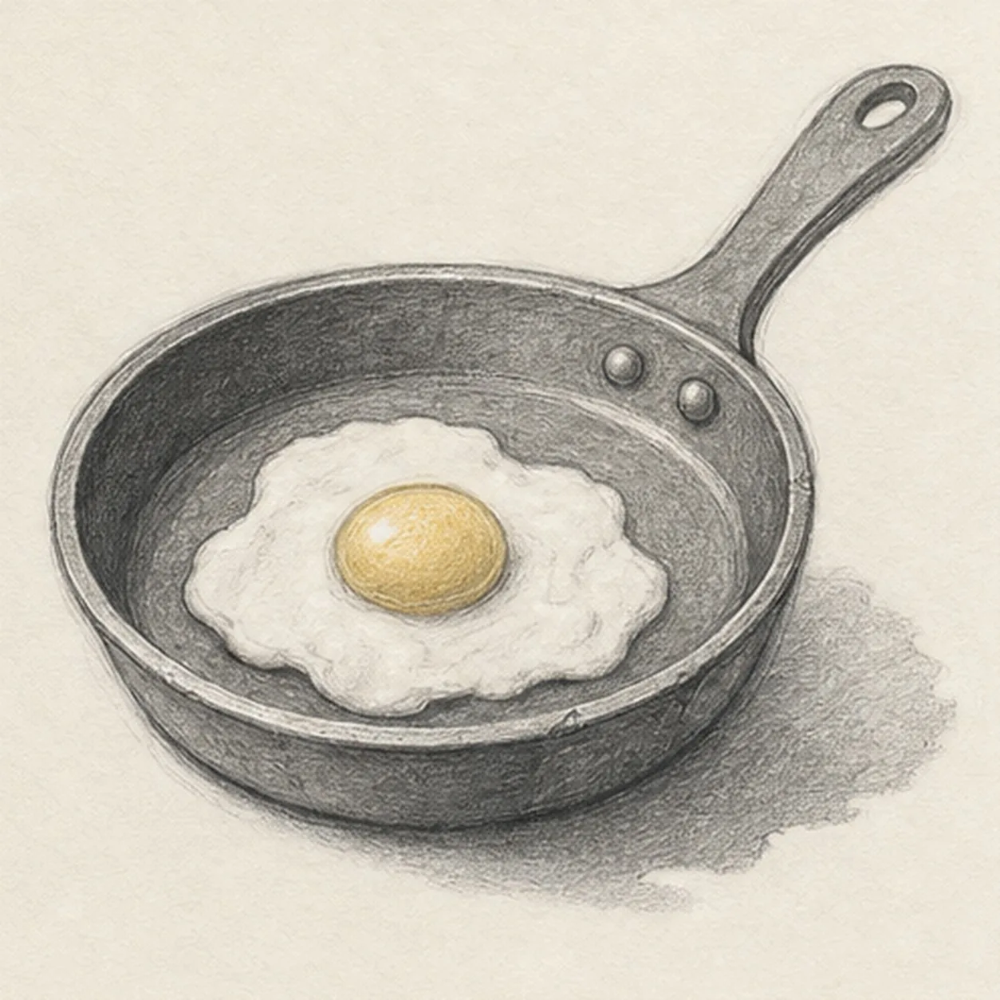

From the archive
Let's draw a cast-iron skillet with an egg
Treat this as one small practice round: build the subject lightly, notice the shapes, then darken only the lines that help the finished sketch.
-
01

Set the skillet ellipse
Draw one pale pan ellipse with a second curve for wall depth, then add the long handle axis and width, an irregular egg reserve with a round yolk guide, and a broken shadow footprint.
Sketch tip: Ghost the ellipse several times from the shoulder before touching down. Compare the empty wedges on either side of the yolk reserve so the egg feels nested in the pan rather than pasted on later.
-
02

Build the heavy pan
Wrap the guides with the complete skillet bowl, inner rim, visible wall depth, long handle, narrow neck, and hanging-hole contour while keeping the egg footprint open.
Sketch tip: Rotate the page for the rim curves and pull each in one relaxed pass. Stop the inner-pan lines at the egg reserve instead of drawing detail that the egg would immediately cover.
-
03

Nest the fried egg
Add one irregular fried-egg white contour and one round raised yolk inside the reserved pan area, preserving the existing skillet perspective.
Sketch tip: Vary the white edge with a few large slow waves rather than many tiny bumps. Keep the yolk slightly above center so the surrounding negative spaces feel natural.
-
04

Add iron and egg details
Place exactly two round rivets at the handle neck, add small rim accents, a few egg-white folds, and only a handful of restrained pan wear marks.
Sketch tip: Count both rivets before moving on, then use short broken marks for the wear. Let the rim and handle carry the structure; too many scratches will flatten the dark iron.
-
05

Shade the iron and yolk
Layer directional graphite into the established cast iron, add pale-gold pencil to the yolk, place soft graphite beneath the egg edges, preserve paper highlights, and deepen the broken cast shadow.
Sketch tip: Curve graphite strokes with the pan wall and handle, then shade around the egg instead of across it. Leave open paper in the egg white so it stays visibly lighter than the iron.
-
06

Settle the breakfast sketch
Strengthen the keeper contours and clarify the established pan, handle, hanging hole, two rivets, egg, wear marks, graphite values, pale-gold yolk, highlights, and broken shadow.
Sketch tip: Trace the rim once, count one egg and two rivets, and check that the handle still meets the pan cleanly, then stop while the paper tooth shows. A utensil, bacon, toast, or countertop would turn this focused study into a different lesson.